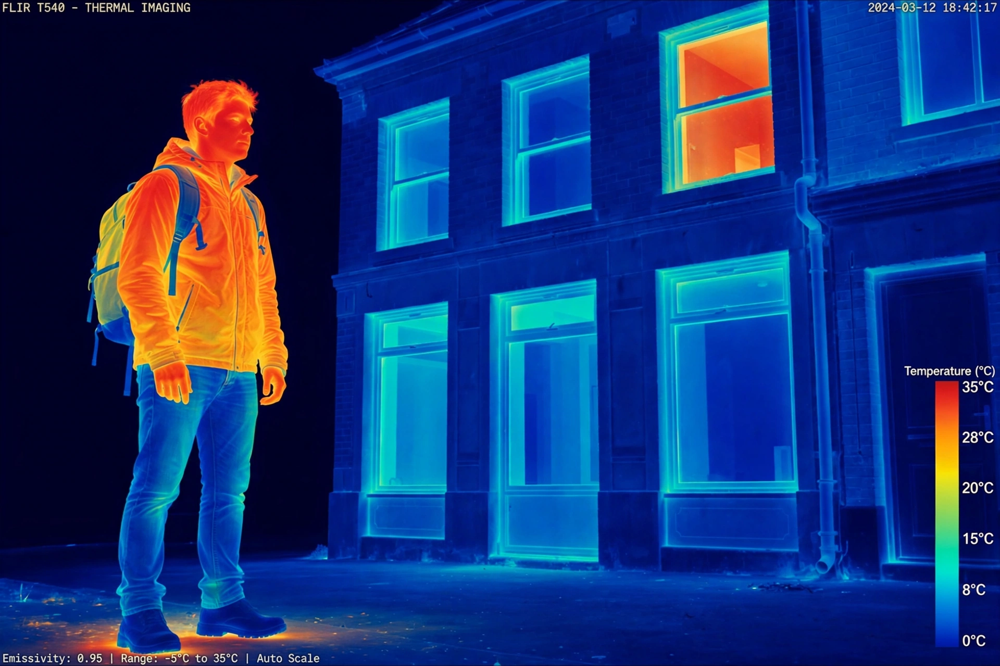

| Thermal imaging (thermography) | |
|---|---|
| Principle | Detection of mid/long-wave infrared radiation emitted by objects |
| Typical bands | 3–5 μm and 8–14 μm |
| Sensors | Bolometers, photon detectors (InSb, HgCdTe) |
| Applications | Night vision, building inspection, medicine, firefighting, industry |

Thermal imaging, or thermography, is the technique of forming an image using infrared radiation, generally in the mid- and long-wave bands, in much the same way a conventional camera forms an image using visible light. Because all objects above absolute zero emit thermal radiation, thermal cameras can "see" in complete darkness and through smoke or haze.
An infrared camera detects radiation and converts it into an electronic signal that is displayed as a visible image, typically in false colour where colours map to temperature. The amount of radiation emitted depends on the object's temperature and its emissivity. Modern uncooled microbolometer cameras have made the technology cheap and portable; high-performance systems use cooled photon detectors.
Thermal imaging is used in military and police night vision and targeting; firefighting, to locate hotspots and people in smoke; building diagnostics, to find heat loss and moisture; electrical and mechanical maintenance, to spot overheating components; medicine, for inflammation and fever screening; and wildlife observation and astronomy. Its long history runs from Herschel's discovery of infrared in 1800 through twentieth-century military developments to today's smartphone accessories.